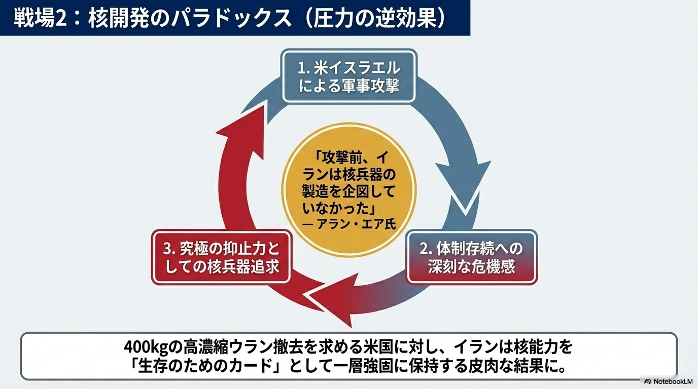

「強くあれ」は保守の本能だ。だがその本能が、防ごうとした危機を自ら引き寄せるとき、保守はどう答えるのか。
米イラン戦争をめぐる論評を見ていると、保守の論客の多くが「強硬路線を支持する」か「現実には難しい」という二択に収まっている。問われていないのは、そもそも「強制外交」という手法が核阻止という目的と整合しているかどうか、という方法論の問いだ。
核合意の現場にいた人物の証言を聞け。アラン・エア元国務省交渉官——2015年のイラン核合意で交渉チームの中核を担った人物——はこう断言する。「攻撃前、イランは核兵器の製造を企図していなかった」。それが今回の軍事攻撃を経て、「核追求リスクが大幅に上昇した」と言い切る。コロンビア大のリチャード・ネヒュー上級研究員も同じ結論に至る。「このアプローチは核リスクを高めた」。
なぜそうなるのか。論理は単純だ。
体制存続を最優先とするイランにとって、通常戦力では米国に対抗できない。核こそが攻撃されない唯一の保険になる——この計算は、圧力が強まるほど強化される。400キログラムの高濃縮ウラン撤去という要求を突きつけられたイランにとって、それは「持ち続ける理由」を増やすだけだ。強制外交が、自ら封じようとした核武装を引き寄せる自己矛盾の罠がここにある。

出所：US-Iran Asymmetric Conflict Report（NotebookLM統合分析、2026年4月）
対比で見れば明確だ。
オバマ政権は少なくとも10年の実務協議を重ね、「米国の力の限界」を直視したうえで核封じ込めに成功した。一時的な妥協と段階的な信頼構築という方法論があったからだ。民生レベルの濃縮を認め、検証可能な制限を課す——不完全ではあるが、目的（核武装の阻止）と手段（段階的合意）が整合していた。
翻って現在の路線は「即時かつ劇的な成果」を求め、交渉団の専門知識も忍耐力も欠いたまま最大限の要求を突きつけている。米国の中東専門家6人が23〜24日のインタビューで一致して語ったのは「完全合意は非常に困難」という現実だ。そして核武装リスクについては、「過去最高水準に達した」という評価で収束している。
強硬路線の帰結がこれだ。
ここで保守が直視すべき問いがある。「強さ」と「強硬」は同義か、という問いだ。
戦略とは目的と手段の整合である。「核武装させない」が目的なら、「核武装の動機を強化する手段」は戦略的誤謬だ。これはイデオロギーの話ではない。方法論の峻別だ。
保守がリアリズムを標榜するなら、自分たちの好む手法が目的を達成しているかを冷徹に問い続けなければならない。「強硬であること」を目的と混同した瞬間に、保守の思考は止まる。敵を追い詰めることに快感を覚え、その結果を直視しない思考様式を、「強さ」と呼ぶことはできない。
専門家たちが一致して「現実的な着地点は部分合意」と見るのも同じ論理的帰結だ。ホルムズ海峡の一時的安定化と濃縮制限を、限定的な制裁緩和と交換する——結局それはオバマ時代の枠組みに近い。「強硬論」の行き着く先が、自らが批判した前任者の解に回帰するという皮肉を、保守は真剣に受け止めるべきだ。